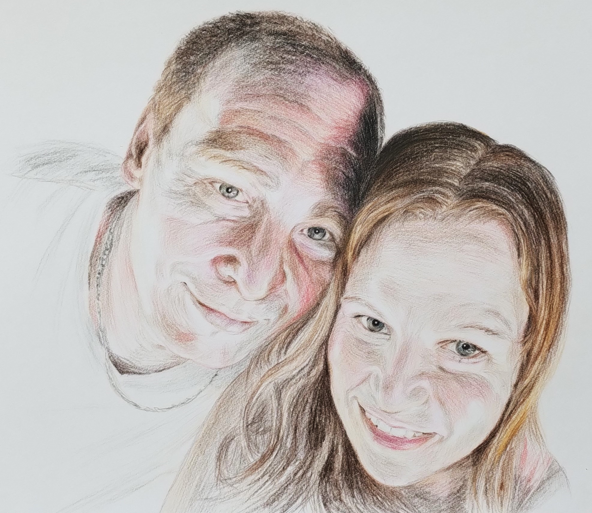
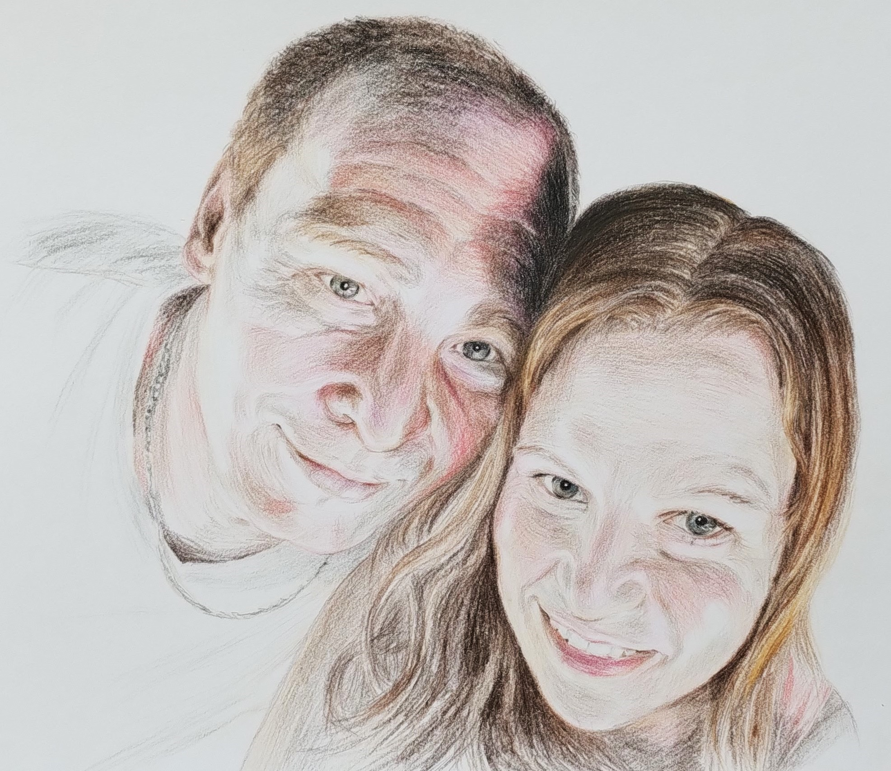
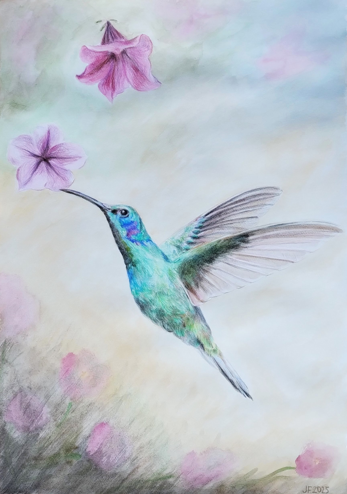
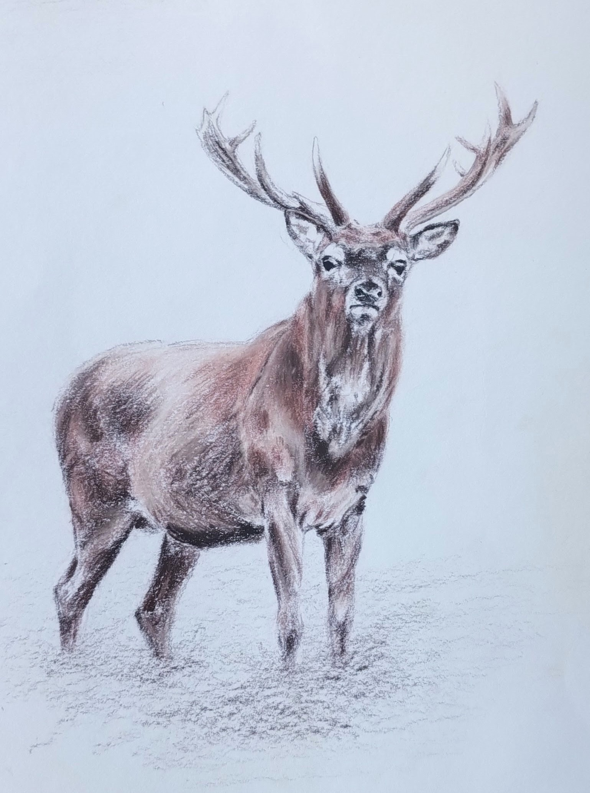
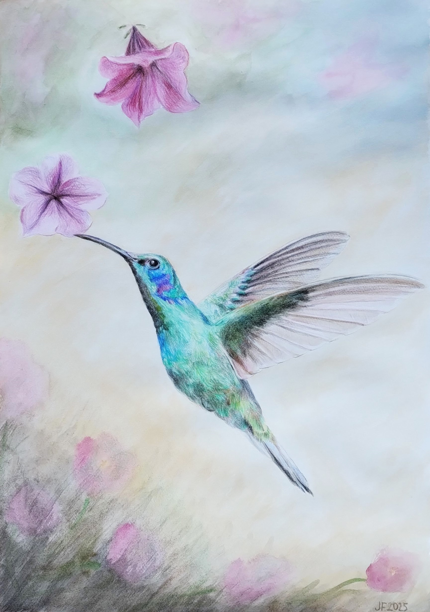
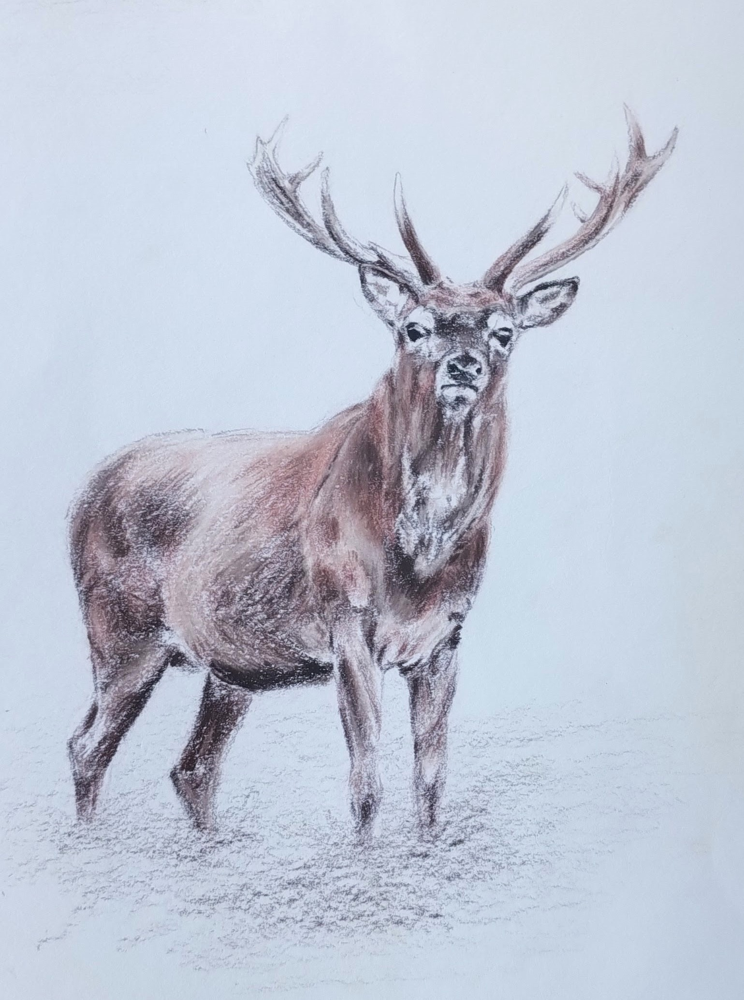

Pozn.: Ne, opravdu nejste na pirátském webu! =D Jen žádné obavy. GitHub je platforma pro verzovánà kódu a spolupráci na softwarových projektech, která umožňuje vývojářům sdÍlet, spravovat a spolupracovat na kódu pomocà systému Git.
Jsem maminka na plný úvazek a kromě péče o rodinu a domácnost nacházÍm potěšenà v umělecké tvorbě. KreslÍm portréty podle fotek, a to nejen dětà a dospělých, ale i domácÍch mazlÃÄků (kteřà hrajà v rodinách nezastupitelnou úlohu a tedy i oni si zasloužà zvěčnit 😊). Také mě bavà expresivnà tvorba, která je mocným nástrojem pro seberozvoj a zpracovánà emocÍ.
KreslenÍm a malbou se bavÍm od té doby, co jsem jako dÍtě vzala do ruky tužku. Fascinovaly mě obrazy v galeriÍch a ilustrace v knihách. Toužila jsem nauÄit se zachytit podobu lidà a jejich emoce, které se v obliÄeji promÍtajÍ. Kromě kreslenà mě také lákalo porozumět fungovánà pÅ™Ãrody.
Studovala jsem biologii a PřF UK (obor imunologie), přiÄemž výtvarná Äinnost pro mě byla oblÍbeným konÃÄkem a také způsobem, jak si vyÄistit hlavu a uvolnit se. Dělalo mi radost vyjádřit svůj obdiv ke zvÃÅ™atům, které spolu s námi obývajà Zemi, formou kresby a malby.
Základy kresby jsem zÍskala během dospÍvánà od Mgr. Jana Majera, který otevřel kroužek pro děti a individuálně se nám s nadšenÍm věnoval. S dalÅ¡Ãm tvořenÍm jsem pak pokraÄovala na ZUŠ Vlašim pod vedenÍm Mgr. Jana Dvořáka, který mě zasvětil do mnoha různých výtvarných technik. NejvÍce jsem si oblÍbila umělecké vyjádřenà pomocà barev pastelkami nebo olejovými barvami. V letech 2019 a 2020 jsem absolvovala kurz olejomalby v ateliéru AvvY v Praze.
Kromě umělecké tvorby mě zajÍmá programovánÍ, takže jsem si s tÍmto uměleckým portfoliem vyhrála od úplných základů vÄetně zdrojového kódu.
Pro kresbu portrétů použÃvám umělecké akvarelové pastelky Koh-i-noor MONDELUZ. Přednostà těchto pastelek je světlostálost a Äistota barev, takže se nemusÍte obávat, že váš portrét Äasem vybledne. KreslÍm vrstvenou technikou, ÄÃmž lze docÍlit optimálnà hloubky a kontrastu. Dávám si záležet na jemnosti provedenÍ, a to zejména v pÅ™Ãpadě kresby dětÍ.
Mojà nejoblÍbenějÅ¡Ã technikou je olejomalba. Nejradši maluji ve vrstvách, což dodá obrazu požadovanou hloubku. Někdy si ale ráda hraji technikou alla prima.
 

 





• Dopřejte si nevšednà retro zážitek – nechte se nakreslit – dÍky dnešnÍm vymoženostem ani nemusÍte sedět několik hodin modelem, postaÄà k tomu pouze pár fotek
• PořiÄte perfektnà dárek pro vaše blÍzké – darujte radost, portrét od srdce 😊
• Zvěčněte pro Vás důležité momenty, abyste nikdy nezapomněli
RuÄně kreslený portrét můžete nejprve nezávazně poptat a domluvÍme následně detaily a dáme dohromady objednávku.
UrÄitě se bude hodit, když mi zašlete vÍce fotek dané osoby nebo domácÍho mazlÃÄka, které chcete nechat portrétovat – fotografie „zepředu“ (en face) i z profilu, abych zÍskala co nejlepÅ¡Ã prostorovou představu a dokázala tak vytvořit portrét podle vašich představ. Důležité je, aby fotografovaný byl Äelem ke zdroji světla, což zajistà vhodný kontrast.
Dále mi můžete sdělit povahové vlastnosti portrétovaného nebo výraz, který byste chtěli zachytit (např. šibalský úsměv vašeho AlÍka, ztvárněnà dětské naivity, roztomilosti a křehkosti vašich potomků, sexy výraz partnera/partnerky a pod.). Toto je hodně subjektivnÍ, proto ocenÍm co nejvÍce podrobnostÍ. V průběhu kresby vám zašlu fotografii ke shlédnutÍ. Na základě vaÅ¡Ã zpětné vazby můžeme následně upravit detaily tak, aby výsledné dÍlo plně odpovÍdalo vašim představám. Před odeslánÍm obrázku vám zašlu i foto finálnà verze portrétu.
DomluvÍme se na způsobu doruÄenà (Zásilkovna, balÍkovna, penguin box, Äeská pošta) a způsobu platby (převodem nebo dobÍrkou) podle vašich požadavků. V pÅ™Ãpadě doruÄenà prostřednictvÍm kurýrnÍch služeb budu ráda, když mi zašlete podacà kód (doruÄenà tak pro vás bude zcela anonymnÍ).
RuÄně kreslený portrét podle fotek, pastelky, formát A3
Děti 2800 KÄ
Dospělà 2500 KÄ
Domácà mazlÃÄci a jiná zvÃÅ™ata 2000 KÄ
V pÅ™Ãpadě vÍce lidà na jednom výkresu (max 3 osoby) + 250 KÄ za dalÅ¡Ã osobu/zvÃÅ™e
Při objednávce vÍce portrétů lze uplatnit množstevnà slevu 10 %
PřijÄte si užÃt jedineÄnou atmosféru kavárny Better Days, kde si můžete nejen vychutnat lahodnou kávu se zákuskem, ale také si odnést kousek uměnà domů se slevou 50 %!
🖌 Portrét na mÍru – objednejte si svůj vlastnà ruÄně malovaný portrét!
🖼 Obrazy na prodej – prohlédněte si mé originálnà malby vystavené pÅ™Ãmo v kavárně a vyberte si ten pravý kousek pro sebe nebo jako dárek.
☕ Relax & inspirace – spojte uměnà s pÅ™Ãjemným posezenÍm v krásném prostředÍ.
💡 Limitovaná nabÍdka – využijte slevu, dokud trvá!
Užijte si focenà se skvělou fotografkou LuciÍ
Nechte tento moment zvěčnit kresbou podle profesionálnÍch fotek - kresba pastelkami umožňuje jemnými tahy a sytými barvami vyjádřit emoce a prožitky s osobnÍm dotekem a hloubkou.
Portrétové focenà s Lucià 850 - 2200 KÄ (lze uplatnit slevu 500 KÄ při objednávce kresby)
NavÍc zÍskejte slevu 500 KÄ na portrét kreslený podle fotek od Lucie
Chcete svému pejskovi dopřát tu nejlepÅ¡Ã péči a navÍc zÍskat slevu?
Pak neváhejte navštÍvit psà salon šikovné panà Terezy Bělinové ve ZruÄi nad Sázavou (v nabÍdce je stÅ™ÃhánÍ, trimovánÍ, koupánà a kosmetická úpravu psů).
K těmto službám obdržÃte voucher se slevou 50% na ruÄně kreslený portrét - máte možnost zvěčnit sebe i svého pejska v plné kráse.
Objednejte si dárkové ruÄně kreslené portréty na mÍru!
Své dotazy a objednávky mi můžete zasÍlat prostřednictvÍm e-mailu:
portretyodsrdce@atlas.cz
IČO: 21862761
© Copyright 2024 Julie Fabišiková. Všechna práva vyhrazena.